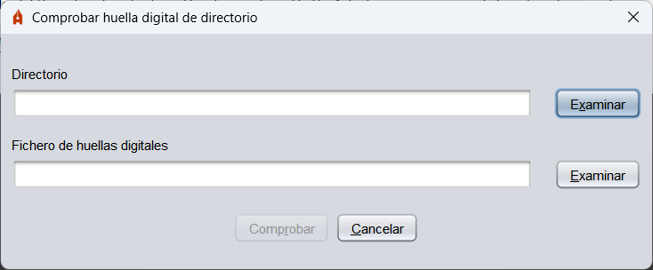

Plugins
Xunto a Autofirma distribúense unha serie de plugins que permiten agregar á aplicación funcións adicionais.
Cálculo e comprobación de pegadas dixitais
Este plugin agrega a Autofirma opcións para calcular a pegada dixital (hash) dun ficheiro ou de todos os ficheiros dun directorio e comprobar esas mesmas pegadas que se xeraron.
Unha vez instálase o plugin, aparecerá na barra de menús de Autofirma a opción "Pegadas dixitais" coas distintas operacións que se poden realizar.
- Calcular pegada dixital: Permite calcular o hash dun ficheiro e gardalo a disco. O formato e a extensión do ficheiro de hash variará segundo o formato seleccionado.

- Ficheiro sobre o que calcular a pegada dixital: Ficheiro do que desexamos calcular o hash.
- Algoritmo de pegada dixital: Algoritmo de hash.
- Formato da pegada dixital: Codificación empregada para gardar o hash:
- Hexadecimal en ASCII (Base16): A pegada almacenarase como cadea hexadecimal termiada en 'h'.
- Base64: A pegada almacenarase en Base 64.
- Binario: A pegada almacenarase sen codificar.
- Copiar pegada dixital ao portapapeles: Ao activar esta opción, ademais de gardar o hash en ficheiro, copiarase ao portapapeles. O hash copiarase coa codificación do formato seleccionado ou, se se seleccionou o formato binario, en hexadecimal.
- Comprobar pegada dixital: Permite comprobar o hash dun ficheiro.

- Ficheiro de datos: Ficheiro ao que corresponde a pegada dixital que se desexa comprobar.
- Ficheiro que contén a pegada dixital: Ficheiro coa pegada dixital.
- Calcular pegada dixital en directorio: Permite calcular o hash dos ficheiros dun directorio.

- Directorio sobre o que calcular as pegadas dixitais: Directorio cos ficheiros dos que queremos calcular a pegada dixital.
- Algoritmo de pegada dixital: Algoritmo de hash.
- Recursivo: Ao activala calcularase tamén o hash dos ficheiros localizados nos subdirectorios do directorio seleccionado.
- Comprobar pegada dixital en directorio: Permite comprobar o hash dos ficheiros dun directorio.

- Directorio: Directorio cos ficheiros aos que corresponden as pegadas dixitais que se desexan comprobar.
- Ficheiro de pegadas dixitais: Ficheiro coas pegadas dixitais que se van a comprobar.
Ao instalar o plugin de pegadas dixitais en sistemas Windows, tamén se agregan as opcións de xerar e comprobar pegadas dixitais no menú contextual de ficheiros e directorios do sistema.
As opcións que aparecen son:
- Xerar pegada dixital: Esta opción aparece no menú contextual de todos os ficheiros e directorios e permite xerar o hash do ficheiro ou dos ficheiros do directorio.
- Comprobar pegada dixital: Esta opción aparece no menú contextual dos ficheiros de hashes (.hash, .hashb64, .hashfiles e .hexhash) e permite seleccionar o ficheiro ou directorio do que se desexa comprobar o hash.